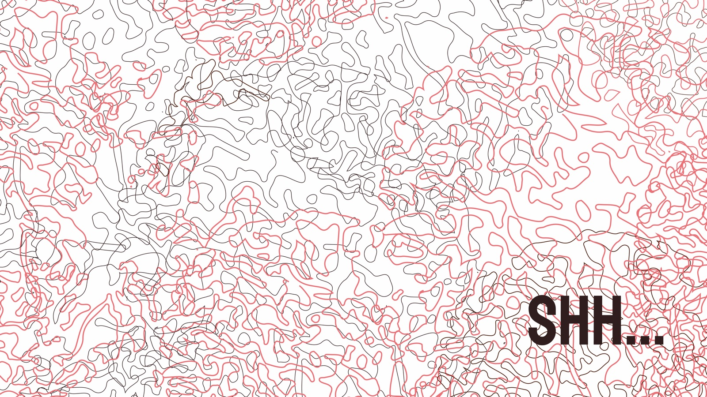
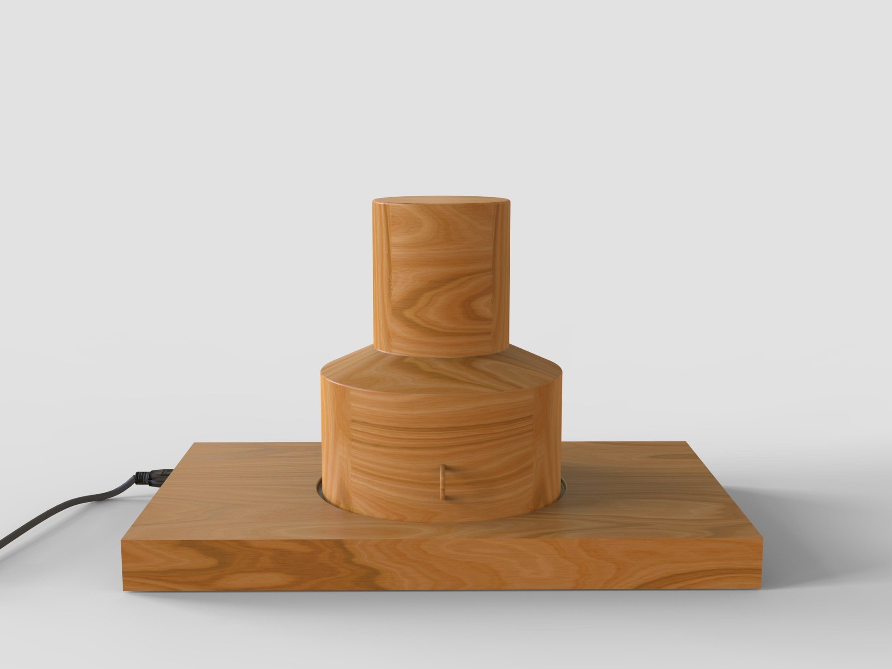
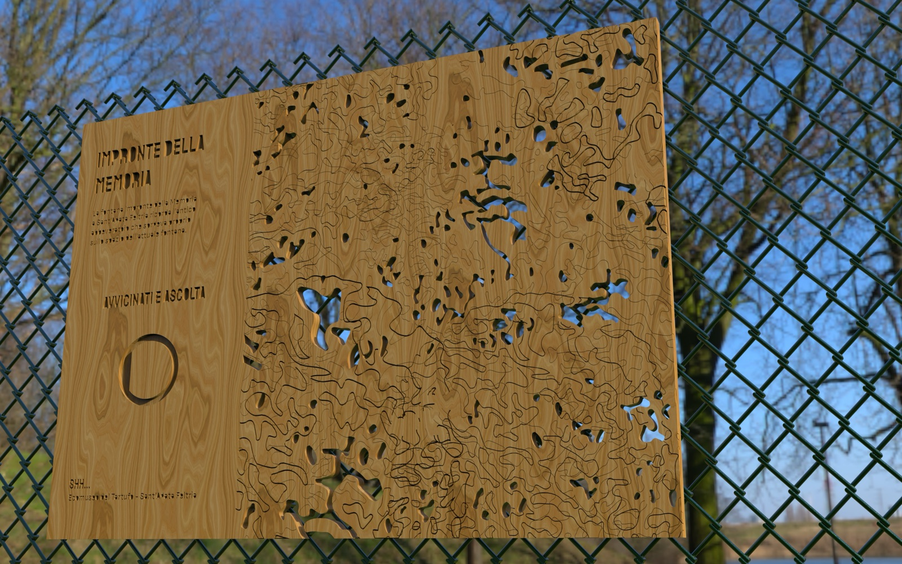
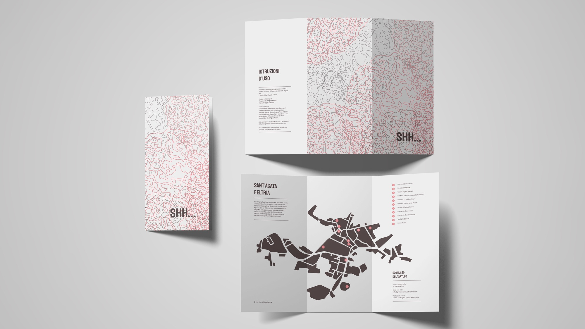
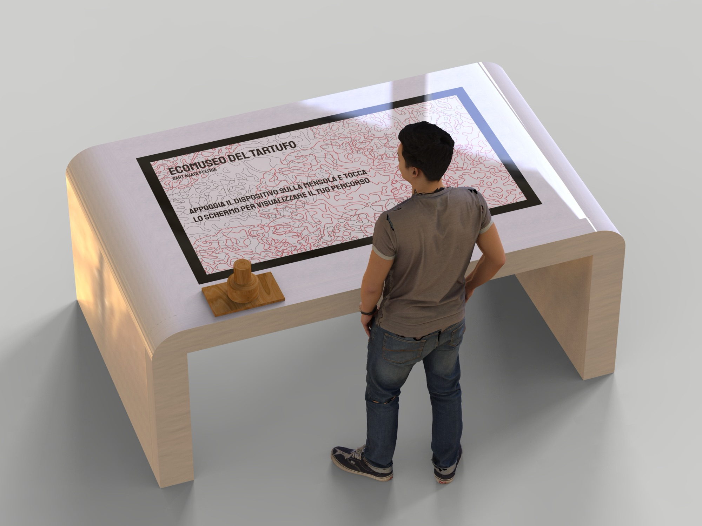
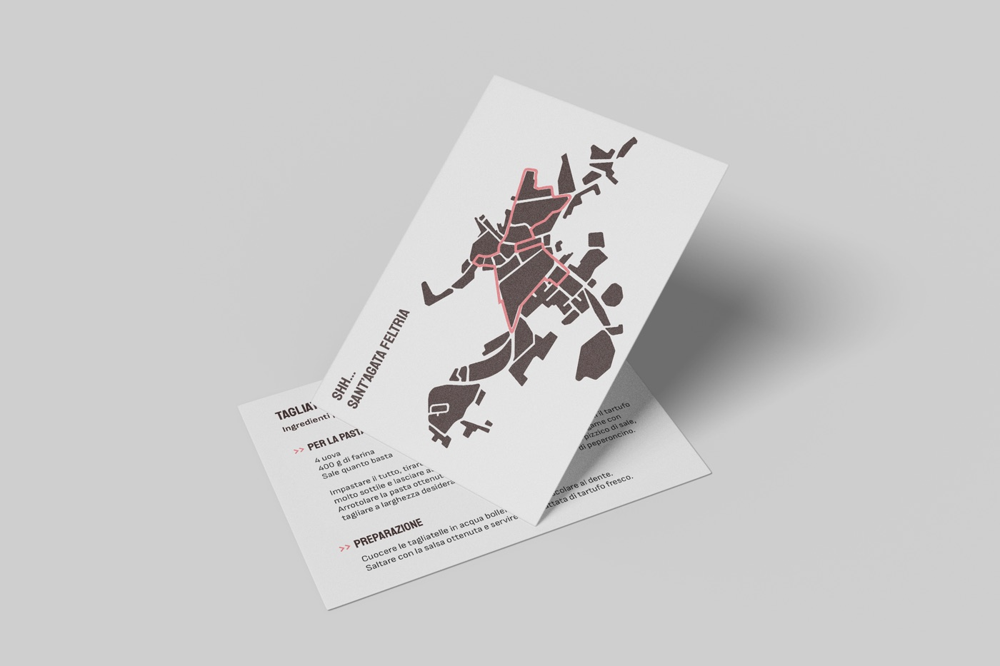
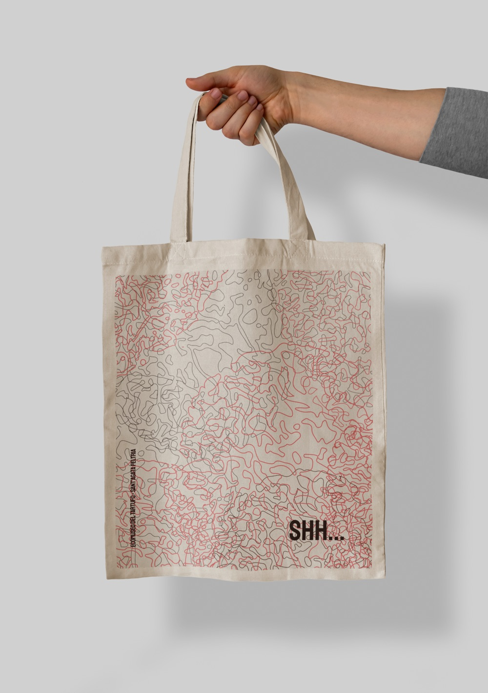

05//
Shh…
A game built on memory: the people of Sant’Agata Feltria tell the stories of their town, and every visitor leaves a memory of their own.

concept
The concept grows out of memory and remembrance. Through a speaker and panels spread around the town, the inhabitants share stories and memories of a place rich in traditions and curiosities, linked to truffles and much more.
Whoever plays creates their own memory of the place, which is then shared and stays on the monitor inside the Ecomuseo. The participant becomes part of the memory itself, and of the community of Sant’Agata Feltria.

how it works
The game is a search for panels around the town, helped by a device. It comes at the start together with a paper map and a canvas bag. The route is free and has no time limit, so the visit to the town can be enjoyed too.
Each panel has a title that hints at the story it tells. Once they find it, people rest the device on the sensor, marked by a set of graphic elements. A small LED lights up as feedback: the device can then be lifted to the ear to listen to the story, just like a phone call.

the map
The paper map helps participants find their way and shows the points of interest of Sant’Agata. The back carries the instructions for the device and the museum’s contacts.
- Ecomuseo del Tartufo
- Rocca delle Fiabe
- Teatro Angelo Mariani
- Fontana Le Impronte della Memoria
- Fontana La Chiocciola
- Fontana La Luna nel Pozzo
- Museo delle Arti Rurali
- Convento dei Cappuccini
- Convento Suore Clarisse
- Trattoria Bossari
- Forno Fabbri

back at the museum
Back at the Ecomuseo, participants place the speaker on the shelf of a touch-screen table and see the route they walked.

something to keep
The route is then printed on the front of a postcard; the back carries a traditional truffle recipe from Sant’Agata Feltria.
The canvas bag holds the device and the map. At the end, participants give the device back but keep the map and the bag as a souvenir of the experience.

